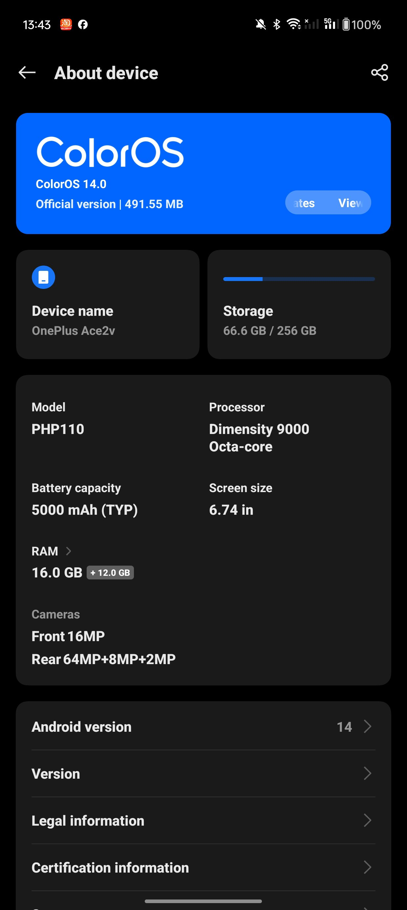
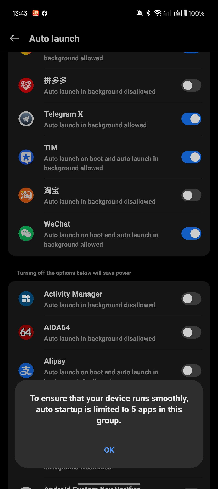
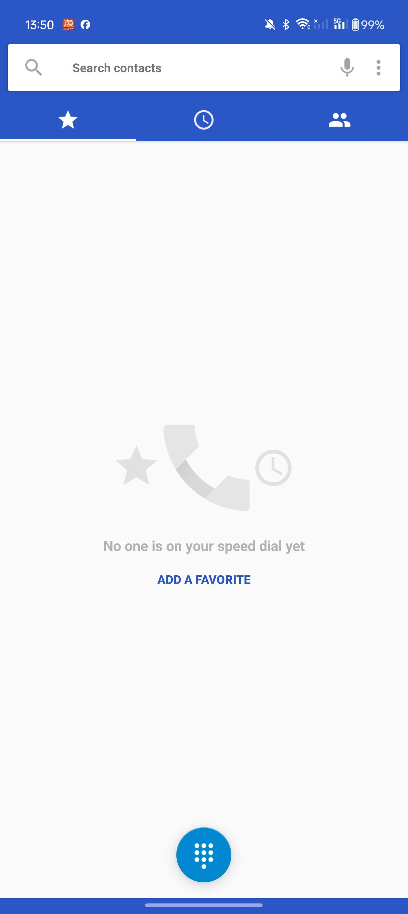
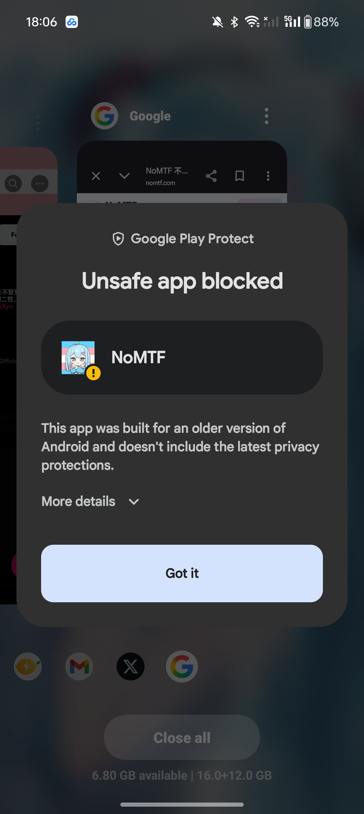

RT @TeamRain_2024: Color os 1+ 使用感受：到手第一件事就是把能停用的系统app停了，换成Google的。最烦的：只能5个app自启动，接不到消息最难受的。Play Protect扫描侧载apk，居然能用，挺惊奇的。Google原生的应用也安装了电话…




芸光酱~ 🍥🏳️⚧️
@TeamRain_2024
Color os 1+ 使用感受：到手第一件事就是把能停用的系统app停了，换成Google的。最烦的：只能5个app自启动，接不到消息最难受的。Play Protect扫描侧载apk，居然能用，挺惊奇的。Google原生的应用也安装了电话通讯录等（还是MD2风格），同步要用。感觉不算太好，主要是我不会刷机😭能刷的话我就用GSI了 https://t.co/H83ex3NXR6